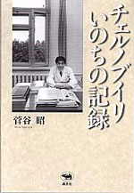

|

|
原発・医療 |
||
| チェルノブイリ いのちの記録 | |||
| 菅谷昭（すげのや・あきら） | |||
|
四六判上製 272頁 |
|||
| 定価1995円（本体1900円） | |||
| ISBN4-7949-6503-6 C0095 | |||
| 世界中を震撼させたチェルノブイリ原発事故は、近隣ベラルーシの子どもたちに甲状腺ガンという被害をもたらした。そんな放射能に汚染された現地にひとり飛びこんだ日本人医師がいた。手術指導、集団検診、現地若手医師の育成、子どもたちとの交流……あらゆる面から援助を考え実践した菅谷医師が５年半にわたる活動をつぶさに記録した「いのちの日記」。 |